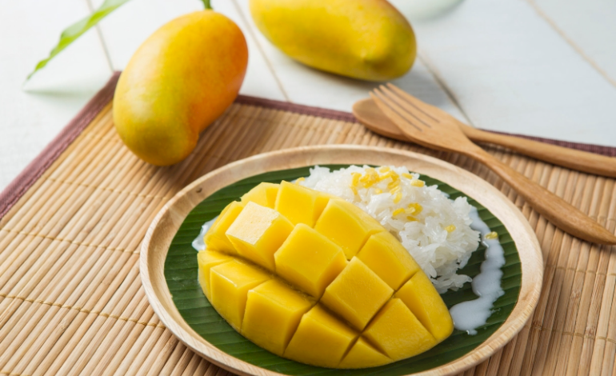

暹裔饮食文化在马水乳交融 · 陪嫁异乡的美食 泰美味

报道：莫咏焮
摄影：莫咏焮、部分照片由受访者提供
马来西亚有不少暹罗裔，他们在大马的扎根可追溯到1900年代初期，年代久远，加上大马人向来爱到邻近的泰国旅游和品尝美食，泰国的饮食文化深深影响马来西亚人的味蕾，也与马来西亚人偏爱吃辣的口味融为一体。
从文化角度上看，种类繁多且风味独特的泰国美食渗透进我国人民的饮食习惯，有着久远的影响。
本文尝试探讨大马暹罗裔的美食与我们传统食物的交融，以及本地暹罗裔的短期出家信仰，又跟泰国的出家文化有什么差别呢？

马来餐厅菜单也有泰食
暹裔餐厅受大马人欢迎
1970年提出的新经济政策延伸出我国社会一种新现象，外食文化逐渐盛行，多样化的民族餐厅因此兴起。
这是显而易见的，暹罗裔餐厅的不断扩展是因为泰食深受本地人欢迎，甚至许多马来餐厅也都会特别在菜单上加入一些受欢迎的泰食，来满足本地客户的口味需求。
尽管料理的做法和成分不会有改动，但多数大马暹罗裔业者会对这些泰式菜肴的名称进行修改，让本地顾客更容易理解。
如泰式炒河粉Pad Thai在这里被称为“Padprik”，而 “Nam Phrik”酱汁则被称为“ Sos Tiga Rasa”。
暹罗人口味影响北马州属
暹罗人味蕾上的鲜明自主，尤其影响大马北部州属，如槟城、玻璃市、吉打和吉兰丹州（更靠近泰国），多数人会更喜欢吃辛辣和酸味十足的料理。
酸豆（Tamarind）、酸杨桃（sour carambola）、青柠以及鸟眼辣椒（Bird’s eye chili）普遍是大马人用来烹煮食物的配料，在泰国北部的人也就是这么吃的。
不说不知道，传统马来料理蓝花饭（Nasi Kerabu）中使用柠檬叶、火炬姜和薄荷叶其实受暹罗泰食影响。
当然不只是泰国料理在大马遍地开花，大马对泰国饮食也有影响，例如以切块面包沙爹取代块状凉饭（Nasi Impit）、香蕉煎饼（Roti Pisang）及拉茶（Teh Tarik）。

从街边摊到餐馆
跨国夫妻售泰食创业
星洲日报采访目前在雪隆区和芙蓉市开有3间传统泰国料理餐馆的Wandee与丈夫叶伟伦。Wandee来自泰国清迈，与丈夫相识后白手起家，将泰国美食融入大马。
10年前他们靠着一辆夜市摊位车卖泰国街边小吃做起。餐点包括了在大马很流行的泰式料理，如：青芒果沙律、玻璃鸡脚沙律、和泰式甜点蜜制木薯。
芒果糯米饭销量最好
但他们说，销量最好的是泰国芒果糯米饭，平均每晚会卖上300份。约在10年前，芒果糯米饭在大马盛行起来，可以说几乎没有人没尝过加上厚厚的椰汁和糖，搭配成熟黄色甜芒果的这份甜点。
Wandee说，本地人比较爱点的泰国美食，是味道酸辣的开胃小菜：青木瓜沙拉（som tam），是流行于泰国伊善地区和寮国的一道菜式，以及清迈最具标志性的泰式咖哩面（Khao soi）。
冬阴功酸辣汤（Tom Yam Kung，Kung是虾的意思）在本地也可说是无人不晓的。Wandee说比较传统的冬阴其实是以椰奶为基础的Tom kha gai，视觉上是白色的汤，吃起来像浓郁的咖哩，但本地人偏爱吃酸辣的冬阴功。


泰式料理注意食品外观
Wandee和丈夫经营目前的餐厅已有8年，Wandee已从主厨的身分退下，但她坚持聘请泰国厨师，酱料调配也得亲自下手。
“泰式料理特别注意食品的外观，还有餐点的细节，譬如颜色、味道和口感。”
“我们保持传统做法，注重带有强烈芳香成分和辛辣味的菜肴，比较重口味，酸和辣都要极致。”
从Wandee身上可见，即使是已落地生根的大马暹罗人，仍会保留自身的饮食文化。夫妻俩靠努力发光，用心烹煮料理影响大马人的味蕾。
马约7万暹罗裔
吉拥4.2万比例最高
在大马约有7万名暹罗裔，他们是泰裔马来西亚人，在大马出生或是早年移民到我国的泰族。他们多数分布在大马北部4州，吉打州就占大约4万2000人，是暹裔人口比例最高的州属。
新纪元大学学院中文大学基础传播课，每周四在《多元文化概论》这堂课，助理教授白伟权向学生讲解大马的各个种族来历和文化。
他说：“马来西亚是个多元种族的国家，我们生活在这地方，如果不了解其他族群，往往会因为不了解而产生很多恐惧和误会。”

马泰混血儿分享经历
在有一次的课堂上，他邀请了该校戏剧与影像系的大三学生林嘉宏作分享嘉宾。林嘉宏是马泰混血儿，父亲是土生土长的柔佛州华人，而母亲则来自泰国最北方的都府清莱，也是当地的少数民族，苗族人。
据泰国学者考证，泰国苗族人大约于19世纪中期陆续从中国境内迁徙到当地。因为战争的关系，林嘉宏母亲的爷爷当时候环境潦倒，从中国迁移到缅甸。后来又因环境所逼，林嘉宏的外曾祖父再带着母亲的爸爸迁徙到清莱山上长居。
林嘉宏母亲在泰国出生，从小接受当地教育，但在家里还是会用苗语说话。林嘉宏会说泰语，也稍微听得懂苗语，只是对后者比较陌生。
他会说泰语是因为很多阿姨跟母亲一样，从泰国嫁了过来，从小听着长辈们说母语。

林嘉宏：小学遇身分认同问题
“你妈妈是不是人妖？”
80年代，大部分马来西亚人对东南亚国家还不够理解，尤其是比我国发展得更慢的国家。很多人对外籍配偶多数带有异样眼光和歧视称呼，很多新住民可能始终无法摆脱“外籍新娘”开头的称呼。
“一开始我妈妈会蛮担心，她听很多朋友说，马来西亚很多婆婆会针对外国媳妇，但是我阿嬷就是比较不一样，对我妈妈很好。在外面也没遇到什么问题。”
“唯独是吃的方面，因为这里的食物对他们来讲是很清淡的。也会比较不适应这里的生活方式，以前她是住在村落的，家里没围栏，一出门就可以走入森林采东西吃。”


不了解他人致没必要伤害
林嘉宏上小学的时候遇上身分认同的问题。当时很多人对泰国人就是停留在“人妖”的刻板印象。
“更过分的是会问我，妈妈是不是人妖这样的问题。”
他说，长大后经过消化才明白，很多时候是因为对他人不了解，才会产生这种没有必要的伤害。”

信奉佛教 秉持习俗
暹裔男至少出家一次
大马暹罗裔的生活与庙宇息息相关，他们对佛教有着坚定的信念，而且多数都会秉持一个传统上来说不成文的习俗：泰国的男性佛教徒一生中至少要出家一次。
根据Dr. Siriwat Kamwansa《泰国佛教史》记载，短期出家的习俗，在泰国已经超过600年，马来西亚的佛寺也有办短期出家的活动。
出家是男子成年礼
落发穿上橘黄色的袈裟入住寺庙，对他们来说，这是男子的成年礼。林嘉宏说，大马暹罗裔出家跟在泰国的暹罗人出家没什么差别。
一样的虽然可以不戒荤食，每日只能吃两餐，过午不食，饿的话只能饮水充饥。平日就是帮忙打扫寺庙、潜心修行和研习佛法。
他说在泰国，家里有人出家是一件大事，他们会大肆宣扬，在村庄开派对载歌载舞连续数日，全村以音乐轰炸。
“我发现在这里的出家仪式并没有像泰国的热闹，也许是因为暹罗人在这里算是少数民族，没有什么人一同庆祝。”

马出家少走出寺庙化缘
他也发现大马暹罗人的短期出家似乎少了一项传统。泰国僧人主要是通过化缘来接受信众的供养。短期出家的小沙弥会赤脚走出寺庙，抱着钵盂，带上一个小袋子，为自己一天的饮食化缘。
“在这里比较少看到，多数只是留在寺庙修行，让信徒拿食物来供养。”
他补充，“基本上暹罗裔都会要出家，我有个朋友跟我背景一样，妈妈是泰国人，爸爸是马来西亚华人，他即使在这里生活也一样要出家。”
他说，这位朋友出家回来后焕然一新，变得比以往正能量。但他本人因一直有戏剧表演的关系，出家需要剃光眉毛和头发，他只好将这计划展延。
“即使是大马暹罗人，如果你是男生的话，长辈不会太看重你有没有结婚，反而更重视你有没有出家。”